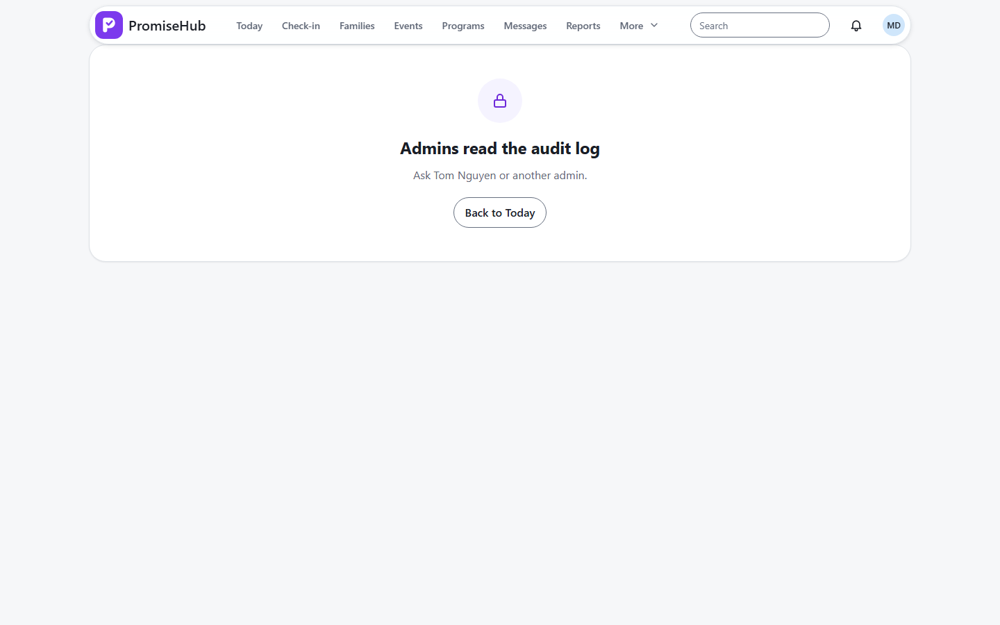
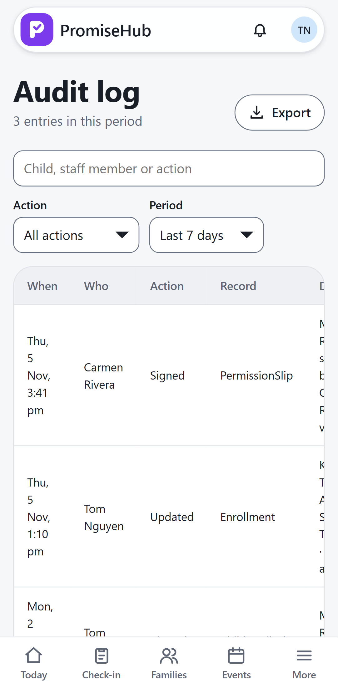

PromiseHub · Video 44
Review audit history
Who looked at what, and when
Who looked at what, and when
Jaylen viewed his medical details.


| Case | Answer |
|---|---|
| Entry 10 days old, 7-day period | Left out |
| Export | CSV, and logged |
| Director | 403 |
Next: manage sessions